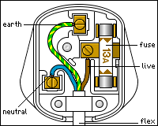
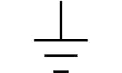

Note
- UK mains is 230 V
- UK mains is 50 Hz (Alternates 50 times per second)
Diagram

| Wire | Color | Usage |
|---|---|---|
| Earth | Yellow-Green striped | Earth the current |
| Live | Brown | Currents go in (but since it’s AC it doesn’t really work like that anymore) |
| Neutral | Blue | 0 volts (and also it not 0 volts cuz AC) |
Earthing symbol
